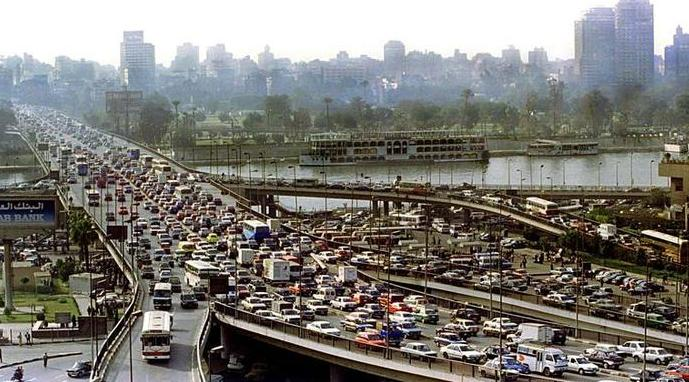

Smart Traffic Relief System
An automated congestion management prototype for 6th October Bridge, Egypt.
The Problem
Traffic congestion is a critical issue in Egypt, particularly on the 6th October Bridge. Consistent jams cause delays, increased pollution, and economic loss. Traditional traffic management is often reactive rather than proactive.
Our Solution
We developed an autonomous prototype that monitors traffic density in real-time. Uniquely, it employs two different logic systems for Day and Night operation to ensure maximum accuracy. When congestion is detected, the system activates a servo mechanism to open an auxiliary "green road," relieving the jam instantly.
Prototype Visualization
Daytime Operation

Simulating traffic detection with CO and Dust sensors.
Nighttime Operation

Simulating traffic detection with Light sensors (BH1750).
Technical Specifications
Daytime Detection Logic
Environmental SensingDuring the day, visual detection is unreliable. We rely on chemical and physical properties of exhaust emissions.

MQ-7 Gas Sensor
Measures Carbon Monoxide (CO) levels from vehicle exhaust.

GP2Y1010 Optical Sensor
Detects Fine Particles (PM2.5) in car emissions. Acts as a "confirmation" sensor to rule out non-traffic pollution sources (e.g., factories).
- Logic: Both sensors must return "High" readings simultaneously to confirm congestion.
- Mounting Height: 2.5 meters above ground.
- Reasoning: Exhaust gases and heavy particles stay close to the ground. This low height ensures the sensors are directly in the emission cloud.
Nighttime Detection Logic
Light IntensityAt night, we analyze light patterns created by vehicle headlights.

BH1750 Light Sensor
Measures the intensity of light pollution on the road.
- Logic: Stationary cars create a steady, high-intensity light field. Moving traffic creates fluctuating signals. The system triggers when high, steady light is detected.
- Isolation: The sensor is placed inside a 10 cm black tube to limit its field of view and block interference from streetlights or buildings.
- Mounting Height: 5 meters above the road.
- Angle: Tilted downwards at 45 degrees. This bird's-eye view allows it to monitor lanes effectively while reducing glare.
Control Mechanism
AutomationThe brain of the operation is an Arduino Controller.
- Input: Processes real-time data from Day or Night sensors based on a photo-resistor trigger.
- Action: If congestion is confirmed, it activates a Servo Motor.
- Output: The servo lifts a barrier or switches a signal to open the secondary "green road". Once sensor readings normalize, the road is closed.
Meet the Creators
Project Portfolio
Comprehensive documentation of our project's journey, research, and technical details.
Project Portfolio (2025-2026)
View / DownloadRecommendations & Real-Life Application
From Prototype to Reality
Scaling our prototype to a full Intelligent Traffic Management System (ITMS) requires strategic deployment and advanced communication protocols.
Target Location: 6th October Bridge
Real-Life ApplicationContext: The 6th October Bridge is a crucial 20.5 km elevated highway connecting Giza with central Cairo, serving around 500,000 vehicles daily. It experiences significant congestion with volumes exceeding 7,000 vehicles per lane, speeds below 15 km/h, and idling times over 45 minutes.
ITMS Deployment: The proposed system monitors a 2 km test segment with sensor clusters every 200 meters. The operation follows three stages:
- 1. Continuous Monitoring: Collecting real-time data on CO, particulate matter, and light patterns.
- 2. Intelligent Decision-Making: Data fusion algorithms analyze congestion. If thresholds are exceeded for >5 mins, protocols activate.
- 3. Control & Actuation: High-precision servos and signal controllers manage traffic flow by opening relief lanes or reversing directions.
Communication: FM Radio Data System (RDS)
Future ConnectivityTo provide real-time updates to motorists, we recommend the FM Radio Data System (RDS) and its Traffic Message Channel (TMC).
- Mechanism: A digital signal is sent alongside FM broadcasts. Modern car radios decode this to show traffic jams on navigation systems and suggest alternative routes.
- Why not in prototype? Broadcasting licenses are restricted for student projects, and professional RDS encoders are cost-prohibitive ($1000s) for this prototype budget.
Hardware Enhancements
Advanced Thermal Sensing

Incorporating high-precision thermal cameras like the FLIR Lepton could improve vehicle detection in extreme weather conditions (heavy fog or sandstorms) where optical sensors might struggle.
Strategic Location Deployment
Expanding the sensor network to cover multiple critical points along the 6th October Bridge will create a mesh network for city-wide traffic management.